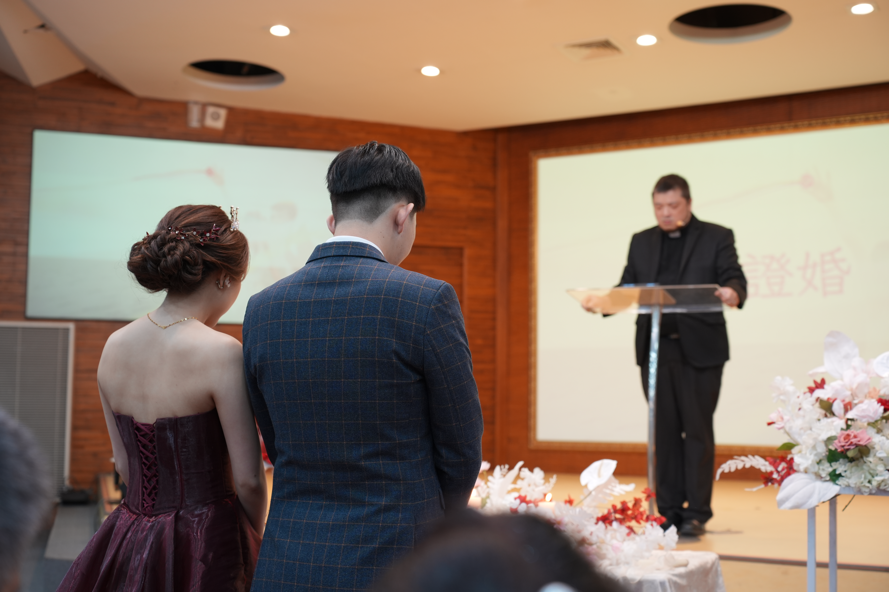
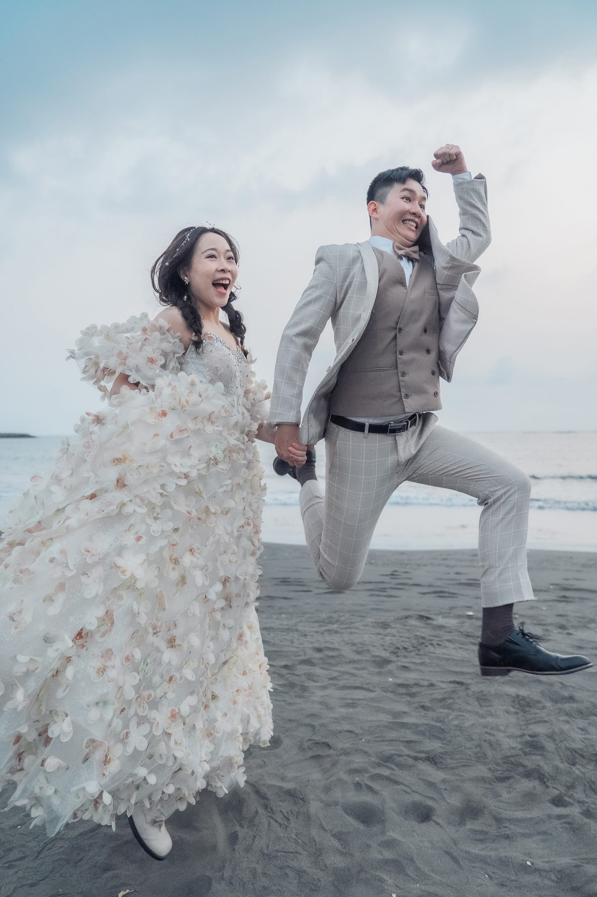
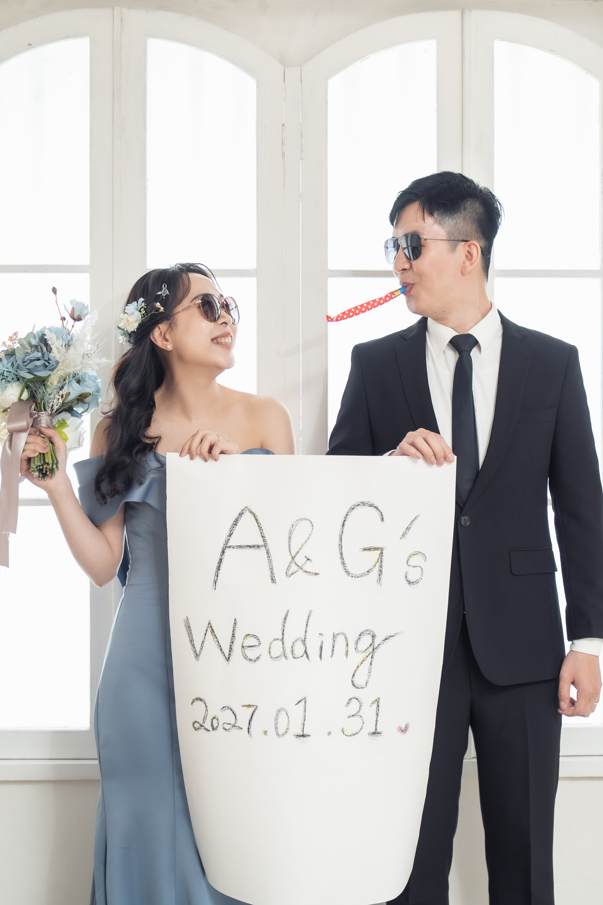
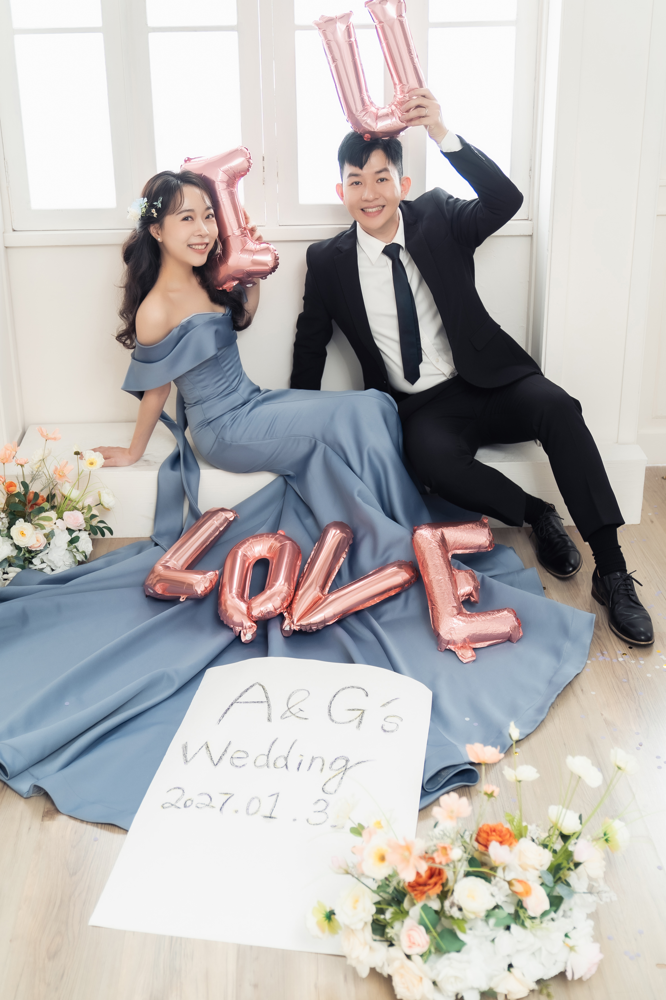
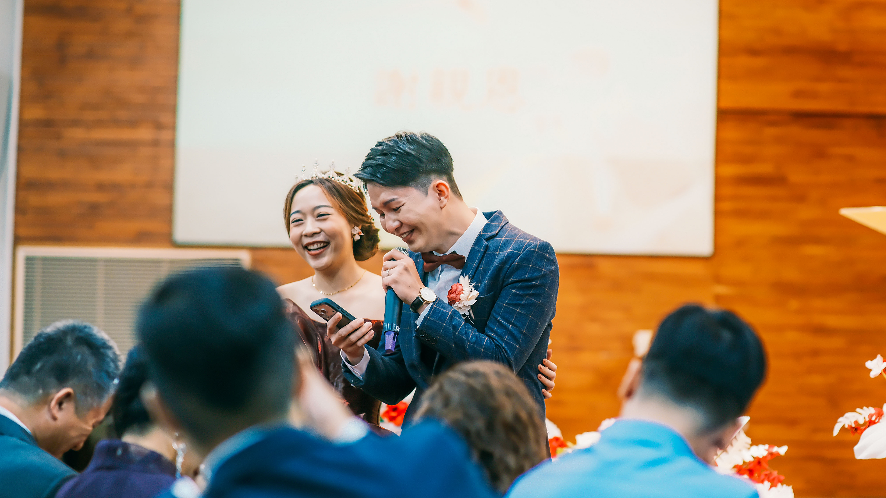
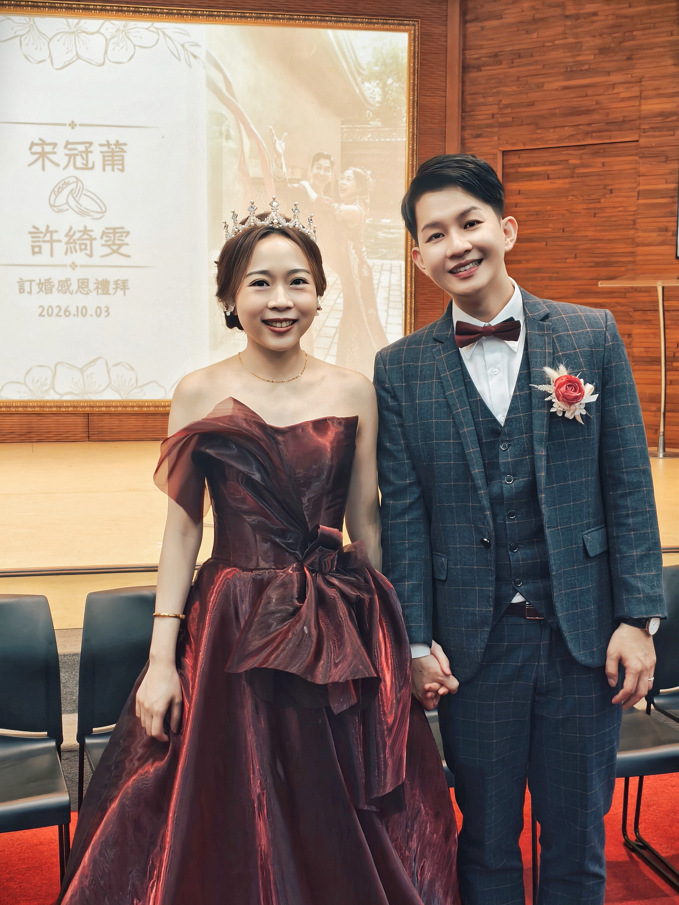
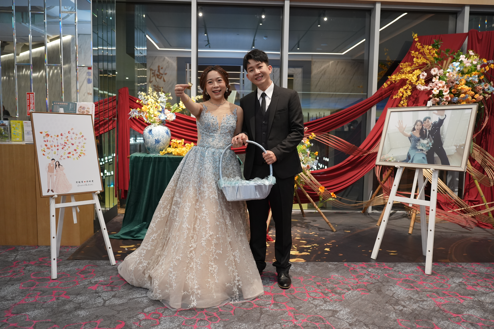

--
天

從台南校園的初遇，到各自奔赴不同城市的四年遠距，每一次相聚都成為我們走向彼此的印記。

A 是台南人，G 是桃園人。因為求學，我們在台南相遇。雖然就讀不同的學校，卻在同一個敬拜團裡認識，也因著共同的信仰，慢慢走進彼此的生命。
畢業後，原以為我們會繼續留在台南生活。當時 G 為了能多一些陪伴，選擇繼續攻讀博士；而 A 則踏上成為老師的旅程，先到花蓮任教兩年，又到台北完成碩士學業。我們也因此展開了四年多的遠距離。
四年多來，我們在不同的城市追逐夢想，也學習在距離中經營愛情。那些一次次的相聚與道別，都讓我們更加確定，彼此就是想攜手走過人生的人。
今年，A 考上桃園市正式教師，我們終於回到了最初相遇時所期待的未來，也即將一起在桃園展開人生的新篇章。
從台南的相遇，到不同城市的成長，再到桃園的相守，謝謝一路陪伴我們的家人與朋友，見證 A & G 的故事走向下一個幸福篇章。





請穿上讓自己自在舒服，又美麗／帥氣的服裝出席。
我們誠摯邀請您以紅、橙、黃、綠、藍、靛、紫任一色系作為穿搭，
和我們一起為這一天增添繽紛色彩，讓祝福更加燦爛。
至於白色，就請留給新娘吧！🤍